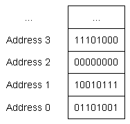

4.1 — Types de données fondamentaux
Bits, octets et adressage mémoire
Dans la leçon 1.3 -- Introduction aux objets et aux variables, nous avons vu que les variables sont des noms désignant une zone de mémoire pouvant servir à stocker des informations. Pour résumer brièvement, les ordinateurs disposent d'une mémoire vive (RAM, random access memory) que les programmes peuvent utiliser. Lorsqu'une variable est définie, une portion de cette mémoire lui est réservée.
La plus petite unité de mémoire est le chiffre binaire (appelé aussi bit), qui peut valoir 0 ou 1. Vous pouvez considérer un bit comme un interrupteur classique : soit la lumière est éteinte (0), soit elle est allumée (1). Il n'existe pas d'entre-deux. Si vous observiez une portion quelconque de la mémoire, vous ne verriez que …011010100101010… ou une combinaison de ce type.
La mémoire est organisée en unités séquentielles appelées adresses mémoire (ou simplement adresses). De même qu'une adresse postale permet de trouver une maison donnée dans une rue, l'adresse mémoire nous permet de localiser et d'accéder au contenu de la mémoire à un emplacement particulier.
Il peut sembler surprenant que, dans les architectures informatiques modernes, chaque bit ne possède pas sa propre adresse mémoire. Cela tient au fait que le nombre d'adresses mémoire est limité, et que le besoin d'accéder aux données bit par bit est rare. Chaque adresse mémoire contient donc 1 octet de données. Un octet (byte) est un groupe de bits traité comme une unité. La norme actuelle veut qu'un octet soit composé de 8 bits consécutifs.
Point clé
En C++, nous travaillons généralement avec des données de la taille d'un octet.
L'image suivante montre des adresses mémoire consécutives, avec l'octet de données correspondant à chacune :

En passant…
Certaines machines anciennes ou non standard peuvent avoir des octets de taille différente (de 1 à 48 bits). Nous n'avons généralement pas à nous en préoccuper, car le standard de fait actuel est un octet de 8 bits. Dans ces tutoriels, nous supposerons qu'un octet compte 8 bits.
Types de données
Comme toutes les données d'un ordinateur ne sont qu'une suite de bits, nous utilisons un type de données (souvent appelé simplement type) pour indiquer au compilateur comment interpréter le contenu de la mémoire de manière significative. Vous avez déjà rencontré un exemple de type de données : l'entier. Lorsque nous déclarons une variable comme entier, nous indiquons au compilateur « la zone mémoire utilisée par cette variable doit être interprétée comme une valeur entière ».
Lorsque vous donnez une valeur à un objet, le compilateur et le processeur se chargent de convertir votre valeur en la séquence de bits correspondant à ce type de données, séquence qui est ensuite stockée en mémoire (rappelez-vous : la mémoire ne peut stocker que des bits). Par exemple, si vous affectez à un objet entier la valeur 65, cette valeur est convertie en la séquence de bits 0100 0001 et stockée dans la mémoire allouée à l'objet.
Inversement, lorsque l'objet est évalué pour produire une valeur, cette séquence de bits est reconstituée pour redonner la valeur d'origine. Ainsi, 0100 0001 est reconverti en la valeur 65.
Heureusement, le compilateur et le processeur font tout le travail difficile ici : vous n'avez généralement pas à vous soucier de la manière dont les valeurs sont converties en séquences de bits et inversement.
Il vous suffit de choisir pour votre objet un type de données qui correspond au mieux à l'usage souhaité.
Types de données fondamentaux
Le langage C++ fournit de nombreux types de données prédéfinis. Les plus élémentaires sont appelés types de données fondamentaux (parfois appelés informellement types de base ou types primitifs).
Voici la liste des types de données fondamentaux, dont certains vous sont déjà familiers :
| Types | Catégorie | Signification | Exemple |
|---|---|---|---|
| float double long double | Virgule flottante | un nombre avec une partie fractionnaire | 3.14159 |
| bool | Entier (booléen) | vrai ou faux | true |
| char wchar_t char8_t (C++20) char16_t (C++11) char32_t (C++11) | Entier (caractère) | un caractère de texte unique | ‘c’ |
| short int int long int long long int (C++11) | Entier (nombre entier) | nombres entiers positifs et négatifs, y compris 0 | 64 |
| std::nullptr_t (C++11) | Pointeur nul | un pointeur nul | nullptr |
| void | Vide | aucun type | n/a |
Ce chapitre est consacré à l'étude détaillée de ces types de données fondamentaux (à l'exception de std::nullptr_t, que nous aborderons lorsque nous parlerons des pointeurs).
Types entiers et types intégraux
En mathématiques, un « entier » est un nombre sans partie décimale ni fractionnaire, qu'il soit négatif, positif ou nul. Le terme « intégral » a plusieurs sens différents, mais, dans le contexte du C++, il signifie « semblable à un entier ».
La norme C++ définit les termes suivants :
- Les types entiers standard sont
short,int,longetlong long(y compris leurs variantes signées et non signées). - Les types intégraux sont
bool, les différents types de caractères et les types entiers standard.
Tous les types intégraux sont stockés en mémoire sous forme de valeurs entières, mais seuls les types entiers standard s'affichent comme des entiers lors d'une sortie. Nous verrons ce que produisent bool et les types de caractères lors d'un affichage dans leurs leçons respectives.
La norme C++ précise également que « types entiers » est synonyme de « types intégraux ». Toutefois, par convention, « types entiers » sert plus souvent d'abréviation pour « types entiers standard ».
Notez aussi que le terme « types intégraux » ne couvre que les types fondamentaux. Cela signifie que les types non fondamentaux (comme enum et enum class) ne sont pas des types intégraux, même lorsqu'ils sont stockés sous forme d'entier (et, dans le cas de enum, affichés comme tel).
Autres ensembles de types
C++ contient trois ensembles de types.
Les deux premiers sont intégrés au langage lui-même (et ne nécessitent l'inclusion d'aucun en-tête pour être utilisés) :
- Les « types de données fondamentaux » fournissent les types de données les plus basiques et essentiels.
- Les « types de données composés » fournissent des types plus complexes et permettent la création de types personnalisés (définis par l'utilisateur). Nous les étudierons dans la leçon 12.1 -- Introduction aux types de données composés.
La distinction entre types fondamentaux et types composés n'est pas très intéressante ni pertinente ; il est généralement suffisant de les considérer comme un seul ensemble.
Le troisième ensemble, le plus vaste, est fourni par la bibliothèque standard du C++. Comme la bibliothèque standard est incluse dans toutes les distributions C++, ces types sont largement disponibles et ont été standardisés pour assurer la compatibilité. L'utilisation des types de la bibliothèque standard nécessite l'inclusion de l'en-tête approprié ainsi que l'édition de liens avec la bibliothèque standard.
Terminologie
Le terme « type natif » (built-in type) est le plus souvent employé comme synonyme de types de données fondamentaux. Cependant, Stroustrup et d'autres l'utilisent pour désigner à la fois les types fondamentaux et les types composés (tous deux intégrés au noyau du langage). Ce terme n'étant pas bien défini, nous recommandons de l'éviter.
Un oubli notable dans le tableau des types fondamentaux ci-dessus est un type de données permettant de manipuler les chaînes de caractères (une suite de caractères généralement utilisée pour représenter du texte). Cela tient au fait qu'en C++ moderne, les chaînes font partie de la bibliothèque standard. Bien que ce chapitre se concentre sur les types fondamentaux, l'utilisation de base des chaînes étant simple et utile, nous les présenterons dans le chapitre suivant, dans la leçon 5.7 -- Introduction à std::string.
Le suffixe _t
De nombreux types définis dans les versions récentes du C++ (par exemple std::nullptr_t) utilisent le suffixe _t. Ce suffixe signifie « type » et constitue une convention de nommage courante pour les types modernes.
Si vous voyez quelque chose se terminant par _t, il s'agit probablement d'un type. Mais de nombreux types n'ont pas ce suffixe, donc cette convention n'est pas appliquée de manière systématique.
Source originale : https://www.learncpp.com/cpp-tutorial/introduction-to-fundamental-data-types/